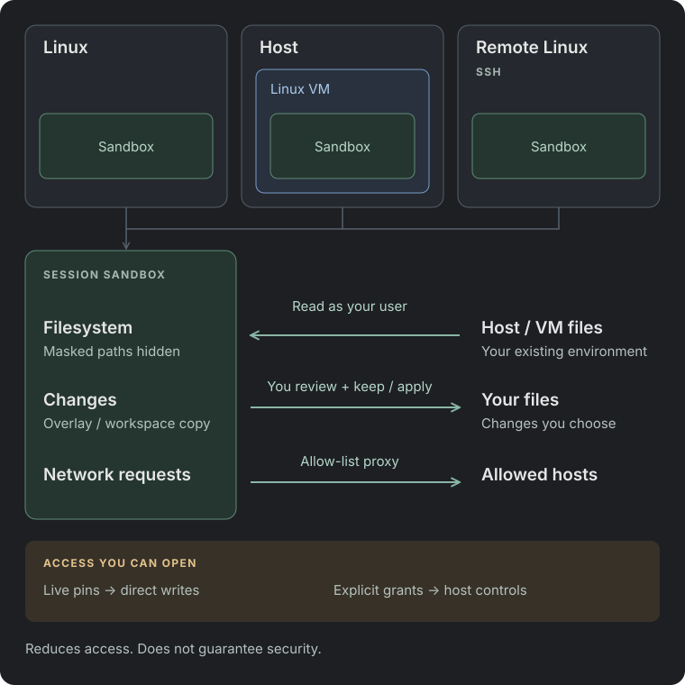

A shelf for AI coding agents.
Sill runs Claude Code, OpenCode, Kimi Code or any ACP agent in a jail on your own machine. The agent sees the whole machine; what it may change, reach and keep is up to you.
curl -fsSL https://mattirk.github.io/sill/install.sh | sh
Paste in a terminal on Linux or an Apple Silicon Mac. The script asks before it changes anything — read it first.
What the script does
- Finds the latest release for your system and architecture.
- Asks what to install: the Mac app, the Debian package, or the tarball — or only show the plan.
- Verifies the download against the release's SHA256SUMS.
- Installs, asks
sudo when needed.

Or download directly · latest
MacApple Silicon · Sill.app with its Linux VMSill.dmg
Debian / Ubuntux86_64 · sudo apt install ./sill_*.deb.deb
Other Linuxx86_64 · unpack, sudo ./sill init.tar.gz
Checksumsone file covering every packageSHA256SUMS
Linux needs bubblewrap, cgroup v2 and a kernel ≥ 6.2. The Mac app is not notarized yet: on first open use System Settings → Privacy & Security → Open Anyway.